Для Юрия Тореева живопись — неторопливый разговор с самим собой, исповедь души, утоление потребности в красках и цвете, в свободном творчестве, не связанном никакими условиями, не преследующем никаких специальных целей. Рука Художника сама наносит краски на бумагу, повинуясь только его настроению, визуализируя его невысказанные мысли, впечатления, воспоминания, извлекая из подсознания знакомые формы и полузабытые жизненные эпизоды.
В процессе живописи Художник преодолевает болезненное чувство обособленности от мира, сопровождающее любую производственную деятельность. Он снова воссоединяется с формами, пространством, космическими силами. Он позволяет себе полную откровенность высказывания.
Однако, в наши времена невозможно сотворить нечто небывалое. «Всё уже сделано, и сделано превосходно» — сказал Лабрюйер. Произведение живописи помимо воли автора непременно повторяет стилевые черты какого-либо из течений или направлений искусства ХХ века. Поэтому живопись Юрия Тореева условно можно классифицировать по «шкале стилей» нашего времени — с поправкой на индивидуальные особенности автора.
Метафизика
Кисть сама собой наносит на лист бумаги архетипические формы — круг, квадрат, треугольник, трапецию, рамы, овалы, столбы… крупные и мелкие, правильные и деформированные (рис. 112). Все эти формы присутствуют в теле человека и в многочисленных изделиях его рук — от посуды до храмовых куполов и колонн, от спичечных коробок до небоскрёбов. Казалось бы, эти разнообразные формы расположены совершенно случайно. На самом деле в их беспорядке просматривается старый, как мир, закон композиции натюрмортного типа: крупные формы образуют между собой треугольник (или квадрат) и окружены мелкими. Вся картина решена в классическом трёхцветии — красный-синий-желтый (коричневый). Краски гармонируют в любом сочетании — благодаря этому картина не рассыпается, а, напротив, образует связное единое целое.
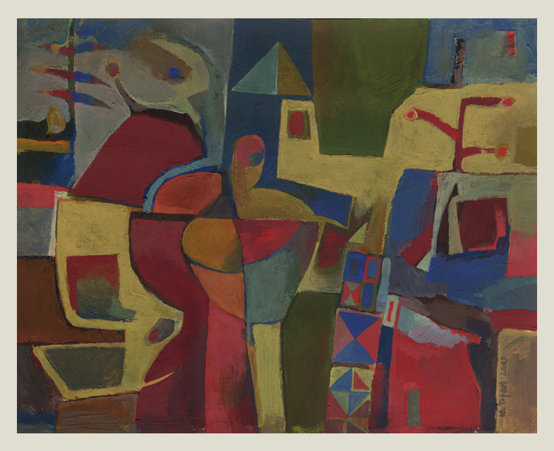
112.
Цвет играет существенную роль в композиции картины; диагональ от нижнего левого угла до правого верхнего намечена крупными пятнами желтого цвета, а другая диагональ — пятнами красного и красно-коричневого.
Многие теоретики модернизма утверждают, что абстрактную живопись не нужно истолковывать или объяснять — достаточно просто любоваться ею, как произведением природы. Тем не менее об этой живописи написаны горы книг, и продолжают возникать всё новые и новые. Это естественно, так как картина всегда отображает мысли и чувства её создателя, и, соответственно, вызывает их в сознании (и подсознании) зрителя.
Этот этюд — крик возмущения, протеста, может быть обиды (рис.113). Случилось нечто, подтверждающее мысль Поэта: «Как страшно всё! Как дико!/ Дай мне руку!/ Товарищ, друг, забудемся опять…» (Ал. Блок)
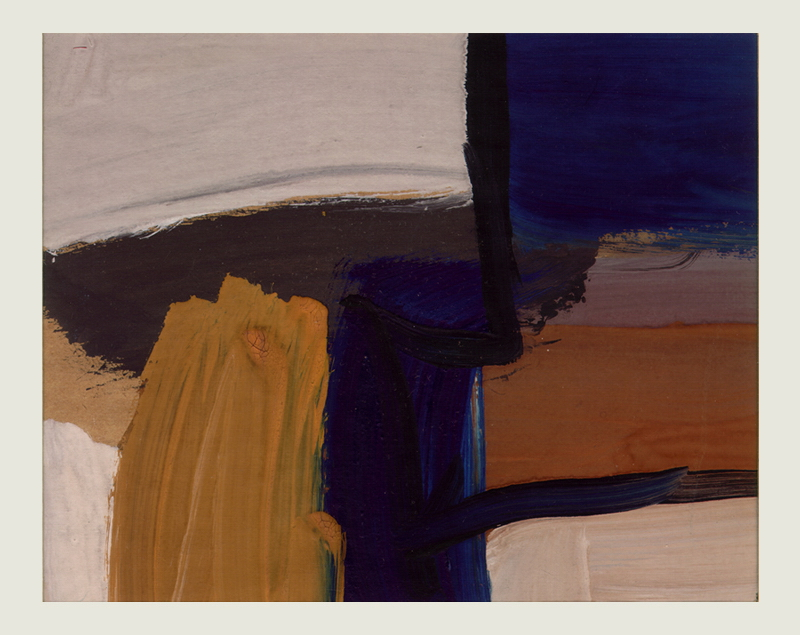
113.
Бесформенное чёрное пятно — воплощение тяжелых дум Художника. Нет здесь симметрии, нет Закона. Чёрное зло правит миром. В тяжёлую минуту сотворил Художник этот этюд.
Временами кажется: нет в мире гармонии и красоты, нет справедливости и равновесия (рис. 114). Левая часть этюда загружена странно раскрашенной кубической формой и голубым шаром; правая — тремя плоскими пятнами чёрного и голубого цвета. Эта картина — манифест антиэстетизма и антигармоничности, свидетельство тяжелого состояния духа её творца. Думаю, зрителю она внушает мысль: помни, что жизнь имеет не только парадный фасад, но и дворовый, где стоят у подъездов мусорные ящики в окружении окурков, огрызков и бумажек, где на газонах выгуливаются собачки, а население выбивает пыль из ковров. И только небо — место чистоты и свободы. Но нам туда нельзя.
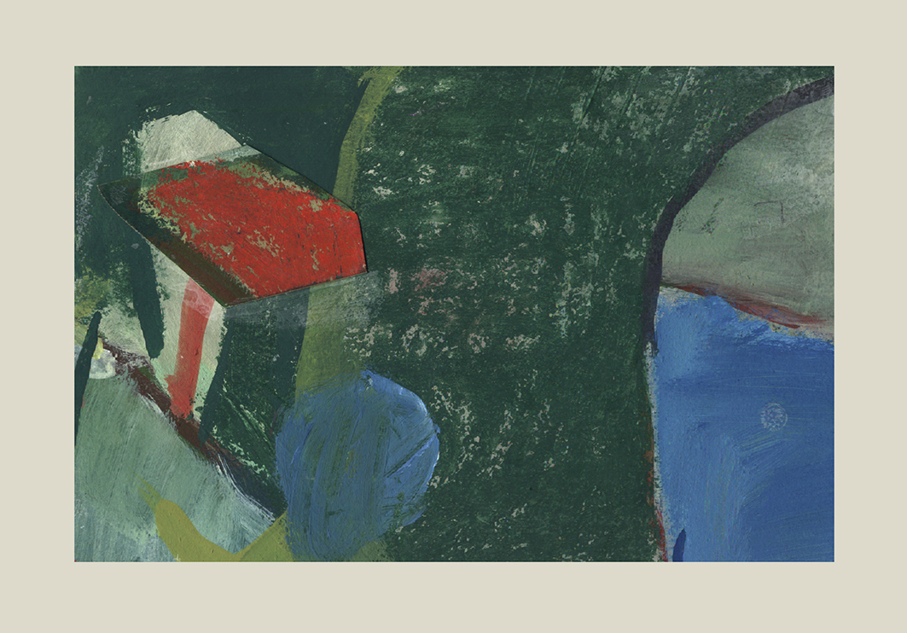
114.
Этот этюд — один из самых глубокомысленных (рис. 115). В нём всё символично и многозначительно. Прежде всего впечатляет простота композиции. Здесь две фигуры на фоне… а, может быть, одна (синяя) и её тень (чёрная)? Вот первая загадка: всегда ли мы понимаем, чтo именно мы видим? Увы, далеко не всегда. Наше зрение коварно — оно может обманывать. Впрочем, в данном случае важнее другое — пропорции и числа, зафиксированные в этюде, а также символика цвета.
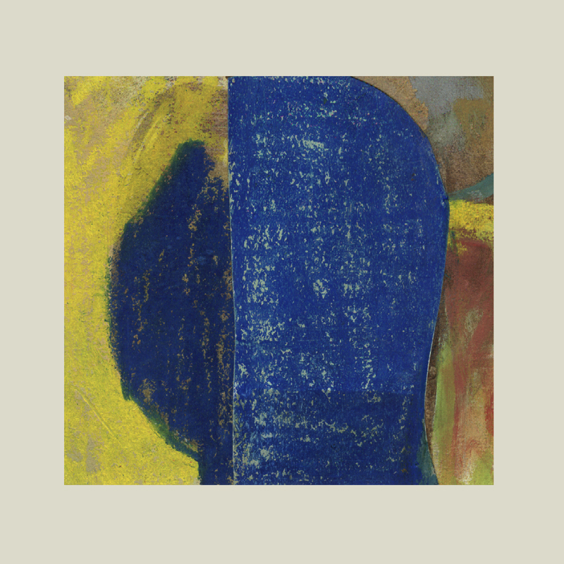
115.
Квадратная рама — это воплощение числа 4, имеющего множество позитивных контаминаций; отношение поперечных размеров синей и черной форм близко к числу Φ (золотому сечению). Это вносит в композицию ноту гармонии, хотя в основе она брутальна, намеренно грубовата. Сочетание синего и черного цветов антигармонично: они разной природы, но сближены по яркости. Грязно-жёлтый с черным также не внушает оптимизма.
Сумма всех перечисленных факторов позволяет сделать вывод: Художник выразил здесь своё недовольство какими-то обстоятельствами жизни. Как пел незабвенной памяти Владимир Высоцкий:
- «Нет, ребята, всё не так.
- Всё не так, ребята!»
Этот этюд — крик боли и скрежет зубовный (рис. 116). Здесь лязгают холодные обрезки железа, колются острыми углами, сражаются без цели в войне всех против всех. Здесь неуместно говорить о природе, о композиции: четыре куска железа набросаны кое-как, а пятая форма частично их перекрыла. Эта работа по стилю близка к футуристическим опытам начала ХХ века, но в ней нет динамики. Время здесь застыло. Так было, и так будет — говорит её создатель. В этой догадке нас укрепляет нумерология картины — в ней пять элементов, а число пять символизирует вечность жизни и, более того — бытия.
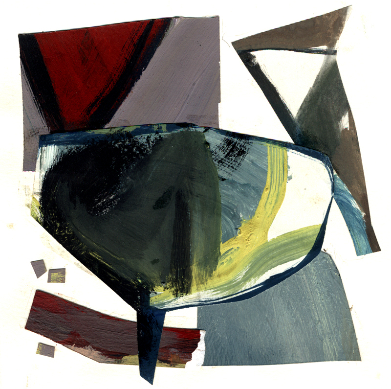
116.
Бывают у Художника (и нередко) моменты спокойного сосредоточенного размышления, и хотя проблема (объект раздумий) трудна, но в какой-то степени разрешима (рис. 117). Этот этюд в наиболее чистом виде продолжает традицию метафизической живописи в духе Моранди. Здесь работает интеллект — стало быть, всё подчиняется логике пространства и числа. Форма фиксирует три измерения — горизонтальное, вертикальное и наклонное под углом 45°. Появляются также изысканные сочетания цветов — черный, коричневый и бледно-голубой. Мятежный дух Художника обретает покой и надежду: может быть, этот вопрос не останется без ответа?
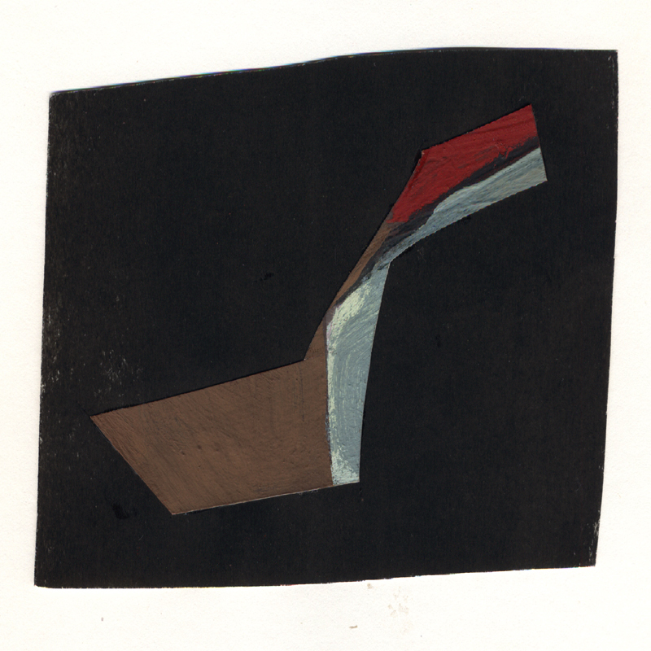
117.
Я бы назвала эту работу «Розовая рогожа» (рис. 118). Здесь мысль и чувство находят успокоение в равновесии нескольких крупномасштабных форм: большое и малое, круглое и треугольное, тонкое и широкое. Такова жизнь — в ней есть Всё, и сама она — благо, как бы ни поворачивались события. Думаю, что этот этюд вдохновлён работами Альберто Бурри. Его можно назвать ещё «Бедное счастье».
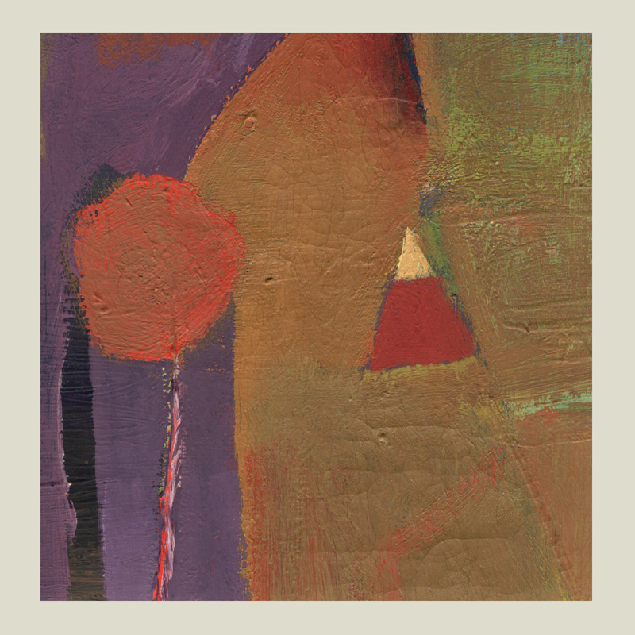
118.
Это «Остроугольный натюрморт с невозможным сопряжением» (рис. 119). Все фигуры натюрморта — плоские, двумерные, вычерченные под линейку. Пространство здесь лишено третьего измерения, а цветовая гамма нарочито-негармоничная. Всё это создаёт атмосферу холодного и бездушного бытия, строго регламентированного, но лишённого смысла. Этот порядок — картонный, готовый развалиться в любой момент. Особенно убеждает в этом совпадение краёв двух форм — оранжевой и серой. Такую конфигурацию можно увидеть в натюрморте только с одной точки зрения из бесконечного числа возможных. Мне видится во всём этом глухой протест против живописи «по правилам», если не пародия на неё.
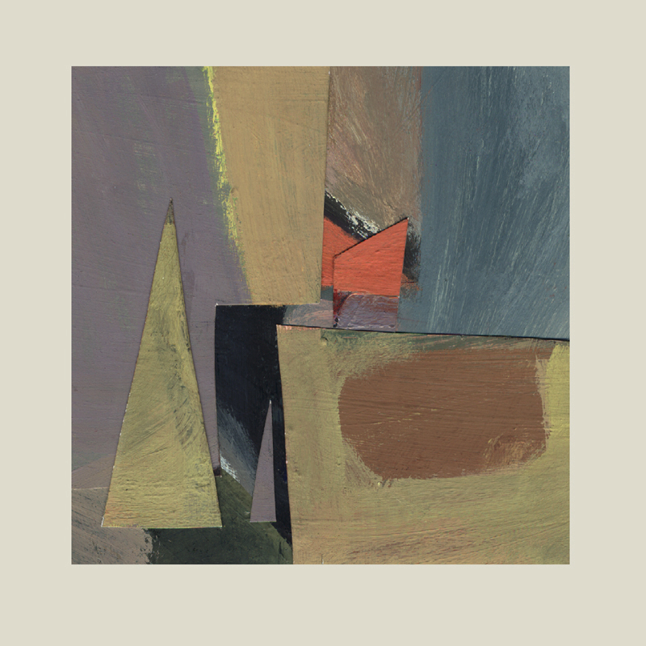
119.
«Чем запущенного лета /грусть заглохшую утишить?» (Борис Пастернак) Здесь мы видим как будто природный пейзаж: тихая река, заросшие зеленью берега, огромные деревья вдали (рис. 120). Прохладное утро, туман… вспоминаются Моне, Коро, Боннар… Но это не импрессионизм и не «Барбизон» — это метафизическая живопись. Доминанту композиции задают два массивных дерева и ось реки. Картина разделена пополам, она подчинена числу два. Это опасное число, наводящее на тревожные мысли. Разделение какой-либо сущности на две половины ведёт к гибельным последствиям. Тем не менее закон единства противоположностей — один из основных и универсальных законов.
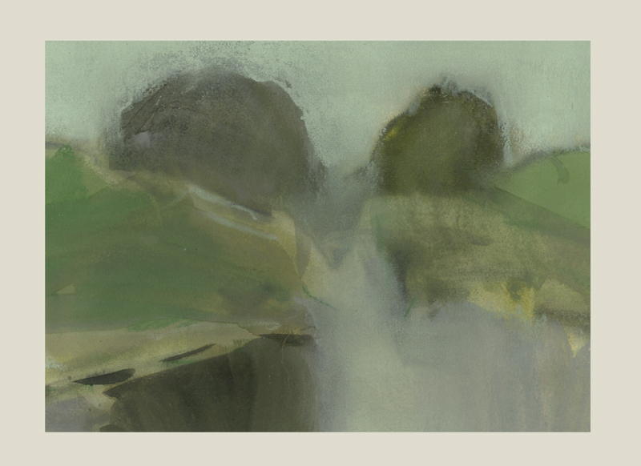
120.
Великий диалектик Лао цзы, говорят, никогда не смеялся. Он понимал необходимость раздвоения Единого, чувствовал его трагизм и неотменимость, и это погружало его душу в вечную печаль.
Художник с задатками философа может играть и шутить, но он редко смеётся.
Кубофутуризм
- И хаос опять выползает на свет,
- Как во времена ископаемых.
- (Борис Пастернак)
- Как во времена ископаемых.
Эта работа — протест против всяких норм, догм и дефиниций, отрицание всех стилей, кроме, пожалуй, одного: Artifex ludens — «искусства играющего» (рис. 121). Разнообразие форм и их количество не поддаются учёту, все они порождены супер-свободной фантазией Художника, но — заметьте! — каждая из них сравнима с каким-нибудь предметом или буквой алфавита. Признаюсь, мне видится в этой картине интерьер уютного, хоть и не слишком прибранного обиталища молодого человека. Девиз его жизни: долой организацию, даёшь хаос! Впрочем, в колорите здесь всё на уровне науки и искусства.
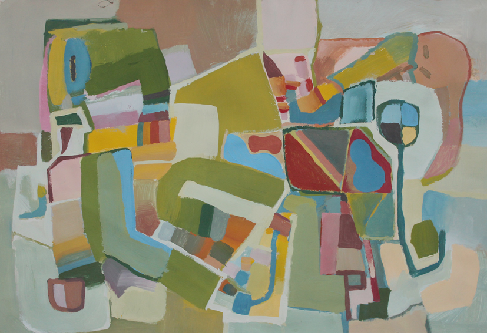
121.
В нашем сознании (и подсознании) содержится огромное количество не структурированной информации, которая также представляет собой некий хаос. Видимо, поэтому имели успех (и имеют по сей день) произведения абстрактного искусства: в них мы чувствуем отображение плодотворного хаоса наших собственных мыслей и чувств. Взгляните на (рис. 122) — и вы согласитесь со мной.
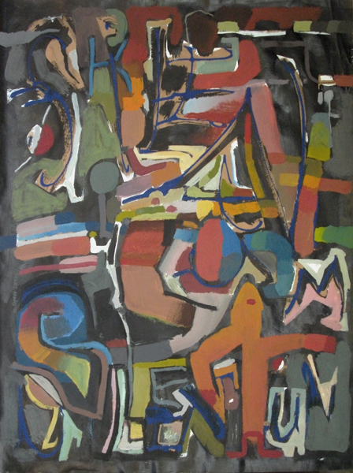
122.
Всё-таки в натуре Юрия Тореева прочно заложено стремление к порядку и организации. Абсолютный хаос — не его мир. Он стремится внести в хаотическую структуру ритм, сомасштабность и однотипность форм. В работе на рис. 123 ощущается ортогональная сетка (каркас), в которую вписываются только геометрические фигуры — круги, треугольники, трапеции, квадраты, кресты. Размеры пятен закономерно возрастают от нижнего края рамы до верхнего. Колорит построен на сочетании двух цветов — голубого и красного. Древний Хаос лишь слегка прикоснулся к этой картине своим дуновением, но не разрушил её порядка.
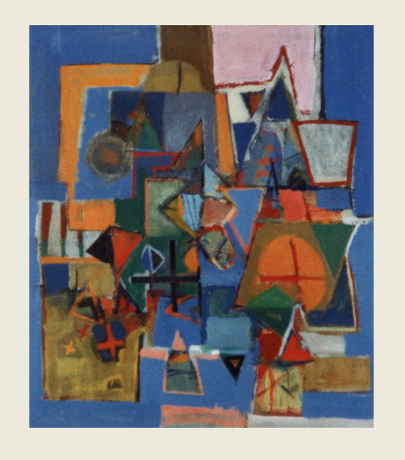
Этот этюд определённо напоминает стол с натюрмортом и сидящими возле него массивными существами инопланетного происхождения (рис. 124). Такая картина может присниться в цветном сне. Палитра красок предельно узкая — оранжевый и голубой, но впечатление — как от полноцветной гаммы, поскольку оранжевый с голубым в нашем органе зрения составляют в сумме белый, то есть активизируют все цветовоспринимающие нервные окончания.
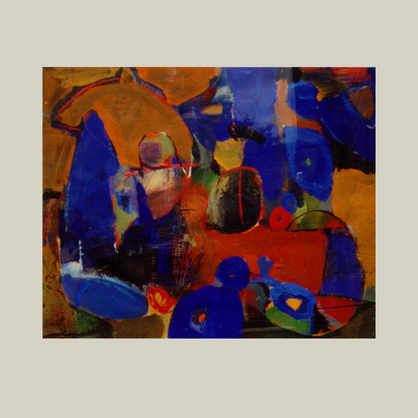
124.
А если говорить попросту — Художник упражнялся в решении задачи: написать живописную вещь двумя красками в полной насыщенности. Ему это блестяще удалось.
Наиболее «футуристическая» картина из всех (рис. 125). Здесь мы видим жёсткие металлические формы, детали машин, трубы, шланги, острые углы и беспощадно-холодный колорит, леденящий душу. Это «игра в футуристов», только без их динамизма и фетишизма техники. «Мы хотим воспеть вихревую жизнь стали, гордости, лихорадки и быстроты», — писал Маринетти. Сталь в этой картине , пожалуй, есть, но гордость и лихорадка — не наш стиль.
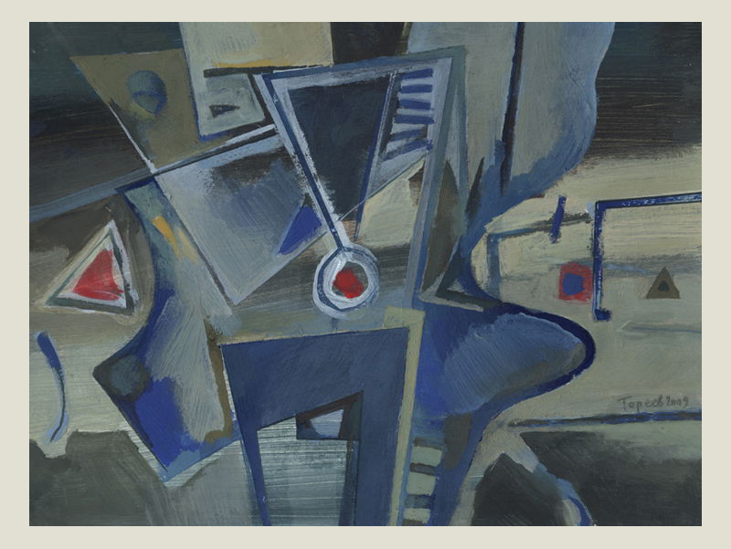
125.
Яркий контраст к предыдущей картине. Здесь всё органично, сочно и вкусно, ароматно и сладко. Созерцание этого натюрморта внушает светлые мысли и радостные надежды (рис. 126).
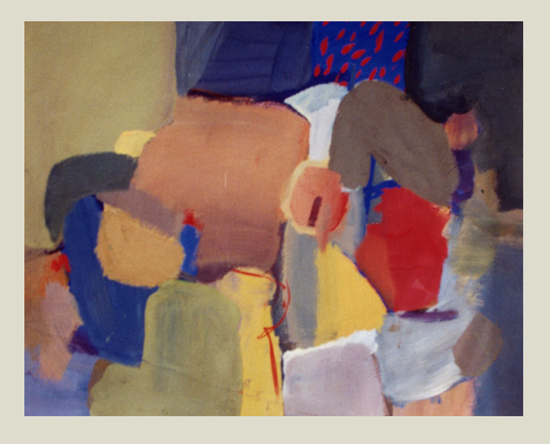
126.
Этот натюрморт — не менее жизнерадостный, но более энергичный (рис. 127). На нём запечатлён момент жизни «на взлёте», в высшей точке синусоиды, и радость исполнения желаний не омрачается воспоминанием о трудностях, которые пришлось преодолеть. Полноценность жизни отображена здесь полноценностью палитры. Здесь есть все краски 8-ступенного круга плюс черная и коричневая. Все действующие лица (предметы) тесно сплотились в дружной компании — а это ли не радость? Размеры цветовых пятен близки между собой — значит, здесь царит равенство и взаимная симпатия.
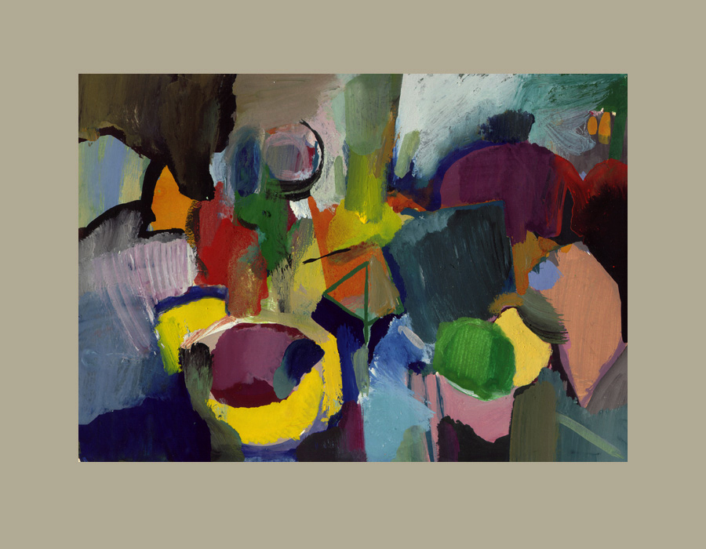
127.
Этот этюд чем-то выделяется из всех. Чем именно? Я бы назвала это свойство богатством. Он богат красками и их чистотой, свежестью техники, разнообразием форм, гармонией и контрастами — богат чувством полноты бытия. Думаю, что по стилю он близок русскому кубизму (Бубновый валет) и некоторым экспериментам Дж. Балла (хотя это получилось не намеренно).
На первый взгляд здесь царит полный произвол: квадраты, прямоугольники, полосы, — прямые, кривые, ломаные… (рис. 128) Присмотревшись, видим, что краски образуют чуть ли не классическую композицию: треугольник красных пятен скрепляет собой конгломерат зелёных, синих и голубых, а белые, серые и чёрные смягчают напряжённость насыщенных цветов. Я бы назвала это: внутренняя свобода при внешней организованности. Или, если хотите — наоборот: внутренняя организованность (неуклонное следование законам классической колористики) при внешней свободе обращения с формой и структурой. Но, как бы там ни было, этот этюд принадлежит к самым изящным и технически совершенным.
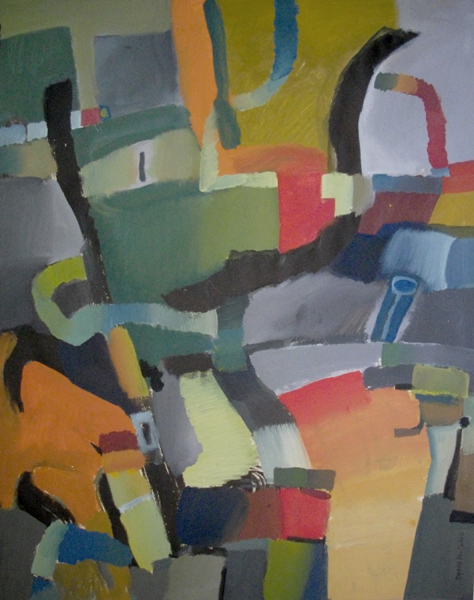
128.
Пусть эту серию завершит «Натюрморт с салфеткой» (так я его назвала) (рис. 129). Он более всех других напоминает этюд с натуры. Здесь читаются традиционные формы, используемые в учебных натюрмортах — кувшин, полотенце, салфетка с узором, нечто похожее на арбуз. Повеяло мирным домашним уютом, покоем и согласием. Однако, Художник не желает переходить на позиции копировщика натуры — он и здесь заявляет о своём праве наносить на бумагу пятна произвольной формы. Он держит логику «на коротком поводке», не давая ей большой воли.
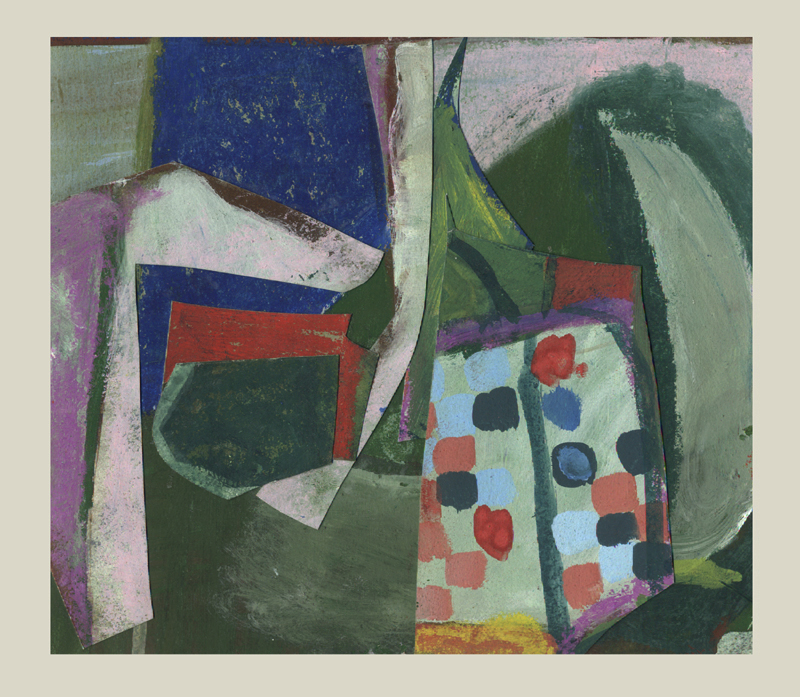
129.
Впрочем, изменять здесь ничего не хочется — Юрий Тореев владеет тайной целостности: «ни убавить, ни прибавить».
Живопись на темы поэзии В. Хлебникова
Можно ли визуализировать космическую стихию сверхповести Велимира Хлебникова «Зангези»? Можно ли в формах и красках передать заумные смыслы этой вдохновенной речи, вытесанной из разноцветных глыб слов разного строения, этого сверх-зодчества из слов? Думаю, что в принципе нельзя, но если очень хочется — то можно.
Юрий Тореев остро чувствует поэзию «Председателя Земного шара». Она, будучи максимально свободной от всех традиций искусства прошлого, сродни свободолюбивой натуре молодого Художника. И возникла у него смелая мысль: создать серию иллюстраций к поэме «Зангези». Эта работа стала темой дипломного проекта Юрия Тореева. Здесь мы покажем лишь несколько работ из этой обширной серии.
Хлебников вскрывает смысл отдельных звуков «звёздного языка» — Тореев создаёт их зрительный образ.
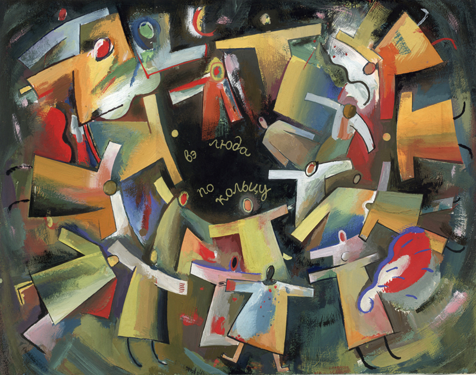
130.
- Вэ люда по кольцу
- Вихрь весенних вольных игр
- Руки людей распахнуты для объятий
- Они обнимают весь мир
- Парни и девушки кружатся в стремительном пёстром хороводе
- Их песни и танцы — священная стихия праздника
- Покоряющая силы природы.
- Вихрь весенних вольных игр
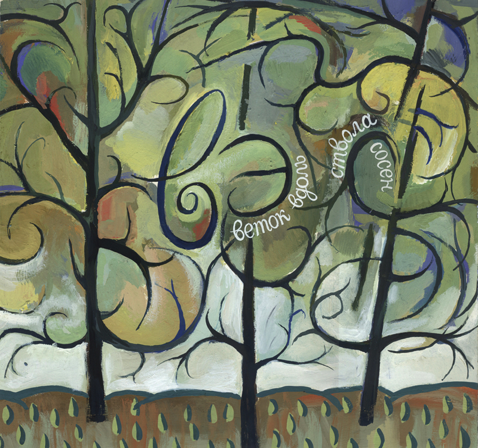
131.
- Вэ веток вдоль ствола сосён
- Деревья вовлечены в это космическое вихревое движение
- Это вечный круговорот Солнца вокруг Земли
- Времён года, дней и ночей, посевов и жатв
- Вращение колдуна в магическом танце
- И вишнёвых лепестков в налетевшем порыве ветра
- Это рисунок колец на панцыре улитки
- И тел лесных змей, когда они спят, запрятав лица
- В складках жареного тела
- Спираль — это конфигурация звёздных туманностей
- Когда они сгущаются в небесные тела.
- Деревья вовлечены в это космическое вихревое движение
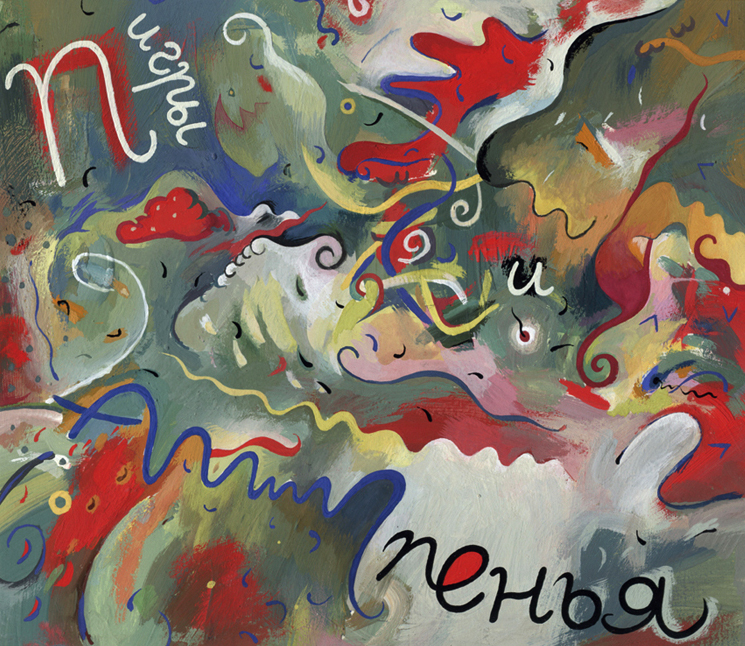
132.
- Пэ игры и пенья
- Здесь хороводные пляски перешли в оргиастическую стадию
- Здесь царят спирали и волны различных амплитуд и радиусов
- В них чудятся прообразы свободных морских и земных тварей
- Рыб змей водорослей ракушек.
- Красное тонет в зелёном, зелёное переходит в красное –
- Стихия горячей крови подружилась со стихией прохладной воды.
- Вместе они образовали стихию свободной живописи
- Подобной игре и пенью.
- Здесь хороводные пляски перешли в оргиастическую стадию
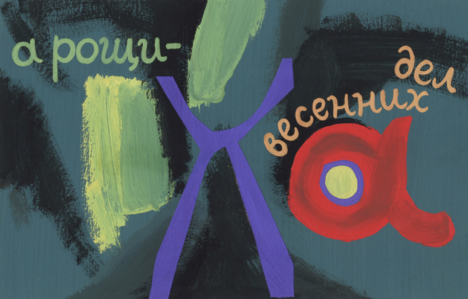
133.
- а рощи — Ха весенних дел
- В ночной роще — черно-синее небо и молодая зелень
- Здесь нет тишины, здесь творятся весенние дела –
- Они красно-розовые, с чётко обозначенной целью,
- Подобной стрелковой мишени.
- Глухари токуют, соловьи распевают
- Иволги призывают суженых…
- Танцоры, утомившись, отдыхают на молодой травке
- В ночной роще — черно-синее небо и молодая зелень
Центр композиции этой картинки — белый кружок в красно-голубой раме буквы а. В студенческие годы Юрий Тореев писал буквы разборчиво.
Серия графических листов на темы поэзии Хлебникова была бы неполной, если бы художник не завершил её двумя миниатюрами метафизического содержания (рис. 134) . Я бы назвала их «жизнь и смерть». Красно-желто-зелёные фигуры на черном фоне можно понять как «люди и земля». Они многообразны, активны, их жизнь — в труде на земле. Свершив свой путь и выполнив долг, они находят вечный покой. Их поза крестообразна, они приблизились к Творцу и Создателю.
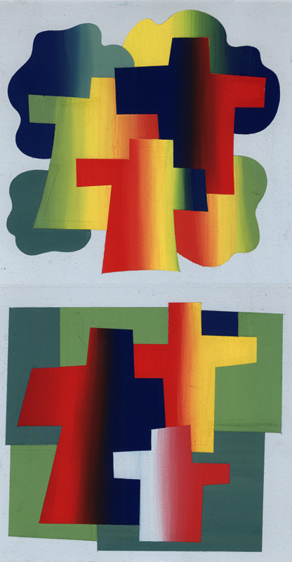
134.
Игры окончены. Началась жизнь без конца.
Искусство Юрия Тореева заслужило признание в международном масштабе. Его плакаты обогащают сокровищницу искусства и выполняют важную гражданскую функцию:
- они пропагандируют, назидают, напоминают,
- осуждают, сочувствуют, внушают,
- скорбят, иронизируют, сомневаются…
- осуждают, сочувствуют, внушают,
А иногда голос Мастера звучит, как крик — чтобы слово его дошло до сознания людей.
Пожелаем Юрию Торееву долгих лет плодотворной работы и больших успехов.
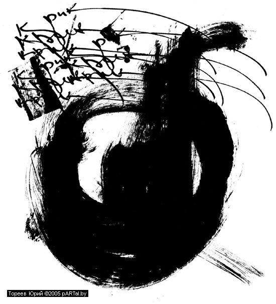
135.
Л. Миронова,
03.04.2014